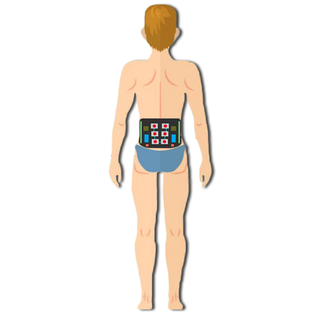

Pitch de BelTech
Project maintained by BelTech
Pitch de presentation tenu lors du Hackaton santé connecté (8/10/16 à Nice) :

“ Bonjour à tous,
Lui, c’est Marc. Il a 35 ans et est fan de sports, et plus particulièrement de tennis, qu’il pratique en loisir depuis 20 ans maintenant.
Seulement, depuis son dernier match il ressent une douleur dans le bas du dos. Son père étant sujet aux lombalgies à répétition, il se demande si ça ne serait pas également son cas. Il n’a pas envie d’arrêter le tennis, malheureusement il n’a pas le choix.. Entre sa santé et le sport, le choix est vite fait.” *Fin du story telling*
La lombalgie touche 8 français sur 10 au cours de leur vie, c’est la première cause d’invalidité en France selon la caisse nationale d’assurance maladie.
Mais heureusement pour Marc, mon équipe et moi-même, marketeur, développeur, et manager, avons développé une ceinture. Son nom, BelTech. (Slide ceinture)
Grâce à un processus innovant, la BelTech,
- prévient et soulage la lombalgie
- Tout en fournissant un suivi via notre application
Jusqu’à présent, aucun acteur sur le marché n’a su regrouper autant de solutions dans un même produit.
Son utilisation est très simple, via le Smartphone, l’utilisateur commande sa ceinture.
- Pour reprendre le cas de Marc, une fonction vibrante l’informe en temps réel de sa mauvaise posture et l'invite à la corriger.
- Dans les moments difficiles, il pourra s’appuyer sur la fonction HEAT qui permet une diffusion ciblée de la chaleur.
- En fin de journée, les données collectées par la ceinture sont synchronisées avec l’application, et Marc a accès à son bilan personnel.
N’oubliez pas, 8 personnes sur 10 ont été, sont ou seront touchées par une lombalgie au cours de leur vie.
Notre objectif : Diviser ces chiffres par 2 d’ici dix ans .
Si vous aussi vous voulez encourager ce progrès, n’hésitez pas à n ous solliciter.
Mieux vaut prévenir que guérir,
merci de votre attention. “